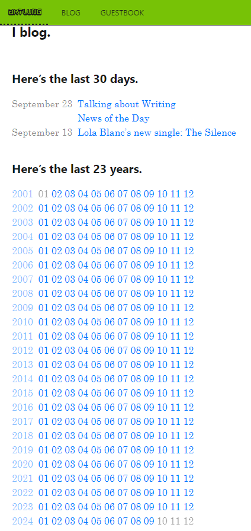

<meta name="category" content="100">
<section>
<h1>
58
</h1>

<p>
I stumbled over <a href="https://artlung.com/">Joe Crawfords personal website</a> and noticed a very interesting design for an index to both year and month-based archive pages.
</p>



<p>
The symmetry is achieved by always rendering all months of the current year. Every line has the exact same width. Using the  two-digit representation of the month instead of the month names keeps the space distribution absolutely even. Also there is no indication of the number of posts to expect, which also helps to keep the line width compact and the column length evenly distributed. You could write on a website for a whole life and still, using such a layout, it every archive page would fit on a screen size of a notebook. Joe already has an impressive 23 years worth of posts. And just four columns of this design would cover 100 years. Even somebody who starts to write consistently on the web as a child would not need more. Vita brevis...
</p>

<time datetime="2024-09-26 19:00">Thursday, the 26th of September 2024</time>

</section>


